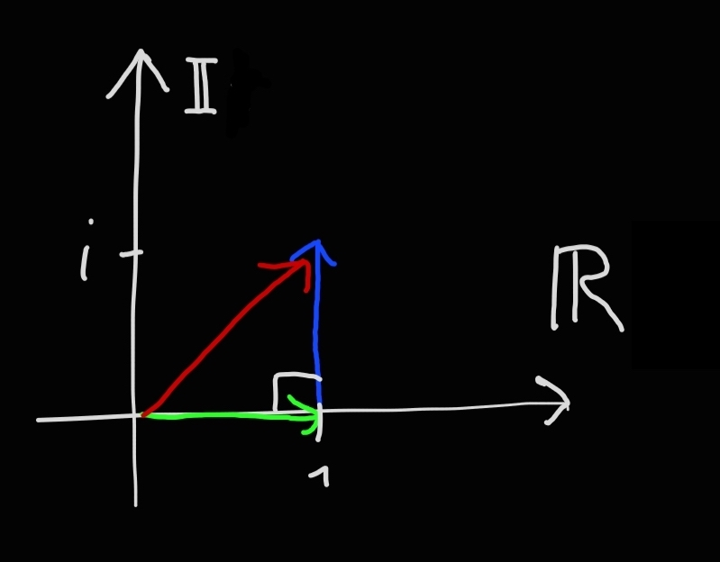
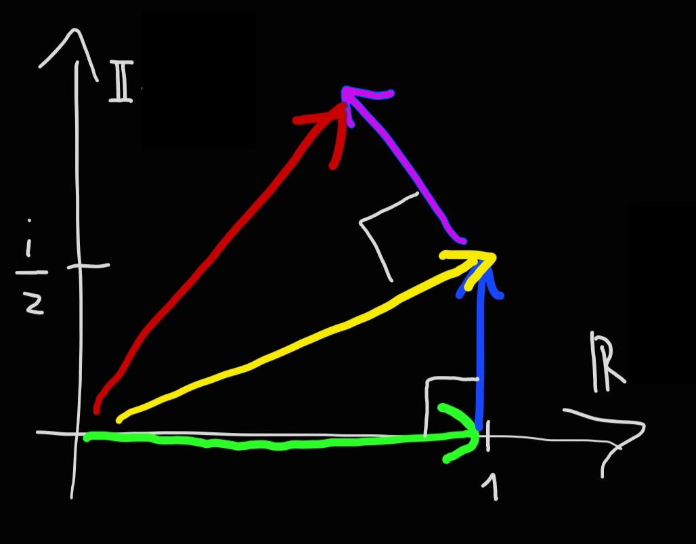
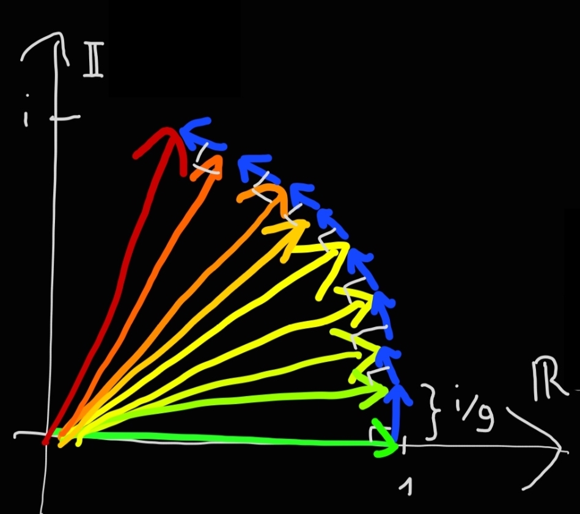

🇬🇧
Spiegazione intuitiva dell'identità di eulero
Data: 10 Gennaio 2022
Introduzione
La formula è:
$$e^{i\pi} = -1$$
La prima volta che vidi questa equazione ero scioccato, com'è possibile legare in una sola linea così tante costanti diverse? cosa c'entra \(\pi\) con \(e\)? e soprattutto cosa vuol dire elevare un numero a un numero immaginario? Cercherò di rispondere con una spiegazione intuitiva a tutte queste domande, gli unici requisiti sono sapere cosa sono i numeri complessi e avere una vaga idea dei limiti.
Interesse continuo in banche reali
Immaginiamo di andare da una banca, la "banca uno" per investire i nostri risparmi. La "banca uno" ci offre un interesse del 100% annuo, calcolato una volta all'anno. Perciò se mettiamo 1€, dopo un anno avremo:
$$1 \text€ + 100\% \cdot 1 \text€ = 2 \text€$$
Decidiamo di cambiare banca e andare alla "banca due". Questa banca ci propone sempre un interesse di 100% annuo, ma calcolato due volte l'anno. Perciò ci verrà accreditato un interesse del 50% al sesto mese e al dodicesimo. Perciò al sesto mese avremo:
$$1 \text€ + 50\% \cdot 1 \text€ = 1.5 \text€$$
E al dodicesimo mese:
$$1.5 \text€ + 50\% \cdot 1.5 \text€ = 2.25 \text€$$
Ora andiamo dalla "banca tre" che, hai indovinato, ci darà un interesse di 100% all' anno, calcolato tre volte l'anno. Perciò ci verrà accreditato un interesse del 33.333% al quarto mese, all' ottavo e al dodicesimo. i nostri soldi saranno:
$$1 \text€ + 33.333\% \cdot 1 \text€ = 1.3333 \text€$$
$$1.3333 \text€ + 33.333\% \cdot 1.3333 \text€ = 1.7777 \text€$$
$$1.7777 \text€ + 33.333\% \cdot 1.7777 \text€ = 2.3703 \text€$$
Quanti soldi avremo andando nella banca quattro cinque dieci cento, o addirittura infinito (dove l'interesse è continuo)? per saperlo rendiamo i calcoli di prima più ordinati. Per esempio nella banca 2 i soldi a fine anno sono:
$$ \underbrace{\left(1 + 50\% \cdot 1 \right)}_\text{soldi al sesto mese} + 50\% \cdot \underbrace{\left(1 + 50\% \cdot 1 \right)}_\text{soldi al sesto mese} = \left(1 + \frac{1}{2}\right) + \frac{1}{2} \left(1 + \frac{1}{2}\right) = \left(1 + \frac{1}{2}\right)^2 = 2.25 \text€ $$
Per la banca 3:
$$
\left[ \overbrace{
\underbrace{\left(1 + 33.3\% \cdot 1 \right)}_\text{soldi al quarto mese} + 33.3\% \cdot \underbrace{\left(1 + 33.3\% \cdot 1 \right)}_\text{soldi al quarto mese}
}^\text{soldi all'ottavo mese} \right]
+ 33.3\% \cdot
\left[ \overbrace{
\underbrace{\left(1 + 33.3\% \cdot 1 \right)}_\text{soldi al quarto mese} + 33.3\% \cdot \underbrace{\left(1 + 33.3\% \cdot 1 \right)}_\text{soldi al quarto mese}
}^\text{soldi all'ottavo mese} \right]
$$
$$
= \left[ \left(1 + \frac{1}{3}\right) + \frac{1}{3} \left(1 + \frac{1}{3}\right) \right]
+ \frac{1}{3}
\left[ \left(1 + \frac{1}{3}\right) + \frac{1}{3} \left(1 + \frac{1}{3}\right) \right]
$$
$$
= (1 + \frac{1}{3}) \cdot \left[ \left(1 + \frac{1}{3}\right) + \frac{1}{3} \left(1 + \frac{1}{3}\right) \right]
= (1 + \frac{1}{3})^3 = 2.3703 \text€
$$
In generale alla banca \(n\), alla fine dell'anno avremo il seguente numero di euro:
$$\left(1 + \frac{1}{n}\right)^n $$
Se facciamo crescere \(n\) all'infinito, questa quantità tende ad un numero chiamato \(e\), che vale circa \(2.718281828459045235360287471352662497757\) (non cresce all'infinito). Per generalizzare ancora, se nella nostra banca "infinito" l'interesse non fosse del 100% in un anno (=1) ma un altro numero \(r\), i soldi alla fine dell'anno saranno:
$$ \lim_{n\to\infty} \left(1 + \frac{r}{n}\right)^n = e^r $$
E se io aspettassi non uno ma due anni nella "banca n" allora l'interesse sarebbe contato 2n volte e i miei soldi alla fine dei due anni sarebbero:
$$ \lim_{n\to\infty} \left(1 + \frac{r}{n}\right)^{2n} = e^{2r} $$
E se aspettassi \(t\) anni sarebbero:
$$ \lim_{n\to\infty} \left(1 + \frac{r}{n}\right)^{tn} = e^{rt} $$
Interesse continuo in banche immaginarie
Cosa succederebbe se una banca mi desse un interesse non di 1, o un qualsiasi numero reale \(r\), ma di un numero immaginario \(i\) = \(\sqrt{-1}\)? In questo caso i miei soldi sarebbero un punto nel piano dei numeri complessi, per esempio alla "banca immaginaria uno" dopo un anno avrei:
$$ \textcolor{#3dfc43}{1 \text€} + \textcolor{#3da6fc}{i \cdot 1 \text€} = \textcolor{red}{(1 + i) \text€} $$

Notare come il guadagno \(i\) sia perpendicolare ai soldi iniziali \(1\), questo è un concetto importante. D'ora in poi non scriverò più il simbolo \(\text€\) per non appesantire la notazione. Andando alla banca immaginaria "due", dove dopo un anno avrei:
$$ \textcolor{#f0e62b}{ \biggl( } \textcolor{#3dfc43}{1} + \textcolor{#3da6fc}{ \frac{i}{2} } \textcolor{#f0e62b}{ \biggl) } +
\textcolor{#cb1fd1}{ \biggl[ }
\frac{i}{2} \textcolor{#f0e62b}{ \biggl( } \textcolor{#3dfc43}{1} + \textcolor{#3da6fc}{ \frac{i}{2} } \textcolor{#f0e62b}{ \biggl) }
\textcolor{#cb1fd1}{ \biggl] }
= \textcolor{red}{(1 + \frac{i}{2})^2}
$$

Anche in questo caso il gaudagno è perpendicolare a i soldi su cui vengono calcolati gli interessi perchè è il risultato della moltipliazione per \(i\). Alla "banca imaginaria nove":

Da questo disegno si capisce che un interesse continuo significa far ruotare il vettore "soldi iniziali" (in questo esempio 1€) attorno all'origine, man mano che passa il tempo. Perciò la formula \(e^{it}\) (quella dell'interesse continuo) rappresenta un punto che ruota attorno all'origine nel piano dei numeri complessi all'aumentare di t, che è proprio l'angolo tra il punto e l'asse positivo dei numeri reali. Perciò la formula \(e^{i\pi}\) rappresenta un punto che ruota di \(\pi\) attorno all'origine, che è proprio il punto -1. Questo è il significato geometrico dell'identità di eulero.